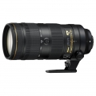
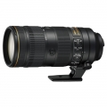
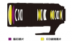
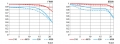

器材库 > 35mm画幅AF变焦镜头 > AF-S 70-200/2.8E FL ED VR

详细规格
镜头类型
远摄变焦镜头
发布日期
2016-10-19
焦距
70mm
等效35mm画幅焦距
200mm
最大光圈
f/2.8
最小光圈
f/22
视角（对角）
34°20 - 12°20
镜头结构
22片/18组
低/超低色散镜片
6片
光圈叶片
9片
最近对焦距离
110cm
驱动马达
SWM（宁静波动马达）
滤镜口径
77mm
镜头卡口
Nikon F
防抖
是
颜色
黑色
尺寸
88.5×202.5mm
重量
1430g
附件
77mm搭扣式镜头前盖LC-77，镜头后盖 LF-4，卡口式遮光罩 HB-78，镜头套 CL-M2
匿名网友2018-06-09 00:19
匿名网友2017-12-02 22:095 分
操作性 5.00耐用性 5.00性价比 5.00解像力 5.00色彩还原 5.00机械结构 5.00
匿名网友2017-11-17 20:524.92 分
操作性 5.00耐用性 5.00性价比 4.50解像力 5.00色彩还原 5.00机械结构 5.00
唯唯和兔宝宝2017-11-15 15:284.83 分
操作性 5.00耐用性 5.00性价比 4.00解像力 5.00色彩还原 5.00机械结构 5.00
产品图 / 样片
AF-S 70-200/2.8E FL ED VR

AF-S 70-200/2.8E FL ED VR

AF-S 70-200/2.8E FL ED VR

AF-S 70-200/2.8E FL ED VR
评测 / 相关文章
- 详细内容 （存档）
- 电磁炮横空出世 尼康AF-S70-200/2.8E FL评测 （存档）
- ［行情］尼康电磁炮继续降价 （存档）
- ［试用］尼康AF-S70-200/2.8E FL VR样张 （存档）
- ［试用］索尼GM对位尼康FL 最强70-200/2.8之争 （存档）
- ［行情］尼康第三代70-200价格稳定 （存档）
- ［试用］电磁炮发威 入手试拍70-200/2.8E FL VR （存档）
- ［试用］长焦新猛将 尼康第三代70-200/2.8海外测试 （存档）
- ［行情］尼康70-200第三代国内上市 （存档）
- ［资讯］尼康AF-S 70-200/2.8E FL ED VR样片 （存档）
相关文章
- ［行情］尼康电磁炮继续降价 （存档）
- ［试用］尼康AF-S70-200/2.8E FL评测 （存档）
- ［试用］尼康AF-S70-200/2.8E FL VR样张 （存档）
- ［试用］索尼GM对位尼康FL 最强70-200/2.8之争 （存档）
- ［行情］尼康第三代70-200价格稳定 （存档）
- ［试用］电磁炮发威 入手试拍70-200/2.8E FL VR （存档）
- ［试用］长焦新猛将 尼康第三代70-200/2.8海外测试 （存档）
- ［行情］尼康70-200第三代国内上市 （存档）
- ［资讯］尼康发布AF-S 70-200/2.8E FL ED VR （存档）
- ［资讯］尼康AF-S 70-200/2.8E FL ED VR样片 （存档）